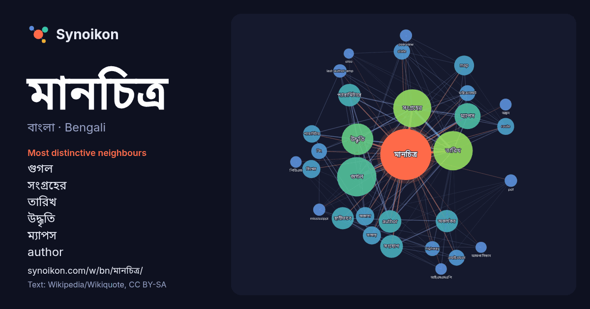

বাংলা · Bengali · word of the day list
মানচিত্র
“map” · The words found around it in 1017 instances from Bengali Wikipedia, Wikiquote.

Most distinctive neighbours
- গুগল 132×
- সংগ্রহের 112×
- তারিখ 103×
- উদ্ধৃতি 97×
- ম্যাপস 75×
- author 58×
- প্যারামিটারে 58×
- অকার্যকর 54×
- স্থায়ীভাবে 47×
- map 46×
- সংযোগ 39×
- প্যারামিটার 35×
- route 34×
- অজানা 32×
- state 32×
- এআইএমএস 31×
- বিং 29×
- মাইক্রোসফট 28×
- highway 27×
- last-author-amp 22×
× = how many times more often than in general Bengali Wikipedia text.
Most frequent neighbours
- গুগল 188
- তারিখ 188
- সংগ্রহের 177
- উদ্ধৃতি 122
- ম্যাপস 83
- সংযোগ 63
- author 62
- প্যারামিটারে 62
- অকার্যকর 61
- স্থায়ীভাবে 60
- map 48
- অজানা 41
- বিশ্বের 40
- ভাষায় 40
- প্যারামিটার 37
- route 35
- state 33
- তৈরি 33
- সেপ্টেম্বর 33
- এআইএমএস 31
In context
- হয়সড়ক মানচিত্র। এটি নেভিগেশন মানচিত্রের একটি অংশ,বিমান মানচিত্র, জাহাজ মানচিত্র,রেলপথ মানচিত্র এবং হাইকিং ও সাইক্লিং মানচিত্রও এই মানচিত্রে অন্তর্ভুক্ত Wikipedia snippets · মানচিত্র
- কার্টোগ্রাফিতে, মানচিত্র প্রক্ষেপণ (Map projection), হচ্ছে পৃথিবীর মানচিত্র অঙ্কনের জন্য, পৃথিবী সমতলের ত্রিমাত্রিক ক্ষেত্রকে দ্বিমাত্রিক ক্ষেত্র যেমন- Wikipedia snippets · মানচিত্র অভিক্ষেপ
- আধুনিক মানচিত্র-অঙ্কন বিদ্যায় ভূসংস্থানিক মানচিত্র বা ভূসংস্থানিক পত্র বলতে এমন এক ধরনের মানচিত্রকে বোঝায়, যাতে ভূপৃষ্ঠের কোনও নির্দিষ্ট ভূখণ্ডের আকৃতি Wikipedia snippets · ভূসংস্থানিক মানচিত্র
- বিশ্বের মানচিত্র হচ্ছে পৃথিবীর পৃষ্ঠের বেশিরভাগ বা সমস্ত অংশের একটি মানচিত্র। বিশ্বের মানচিত্রগুলোকে পৃথিবীর স্কেলের কারণে অভিক্ষেপণ সমস্যার মোকাবেলা করতে Wikipedia snippets · বিশ্বের মানচিত্র
- একটি ভূতাত্ত্বিক মানচিত্র হল একটি বিশেষ উদ্দেশ্যযুক্ত মানচিত্র যা ভূতাত্ত্বিক বৈশিষ্ট্যগুলি প্রদর্শন করে। পাথর উপাদান বা ভূতাত্ত্বিক স্তর রং বা প্রতীক Wikipedia snippets · ভূতাত্ত্বিক মানচিত্র
- গভীরতামিতিক মানচিত্র সমগভীরতা রেখা দিয়ে চিহ্নিত এক ধরনের মানচিত্র যেখানে জলে নিমজ্জিত সাগর ও মহাসাগরের তলদেশের বন্ধুরতা (উঁচু-নিচু প্রকৃতি) ও অন্যান্য Wikipedia snippets · গভীরতামিতিক মানচিত্র
- স্থানীয় মানচিত্র ডেটা ক্রয় করেছে, অথবা কপিরাইটযুক্ত মানচিত্র ডেটা ব্যবহার করার জন্য লিজ চুক্তিতে প্রবেশ করেছে। কপিরাইটের মালিক জুম করা মানচিত্রের নিচে তালিকাভুক্ত। Wikipedia snippets · গুগল ম্যাপস
- রেইসের মানচিত্র ১৫১৩ সালে অঙ্কিত একটি বিশ্ব মানচিত্র যেটি মধ্যযুগের উসমানীয় অ্যাডমিরাল মানচিত্রাঙ্কনবিদ পিরি রেইস কর্তৃক প্রস্তুতকৃত। মানচিত্রের প্রায় Wikipedia snippets · পিরি রেইসের মানচিত্র
More Bengali words
- অরণ্য
- আয়না
- ইতিহাস
- ঈশ্বর
- কাজ
- কুকুর
- ক্ষমতা
- খাদ্য
- গান
- গ্রীষ্ম
- ঘড়ি
- ঘণ্টা
- ঘোড়া
- ছায়া
- জননী
- জলবায়ু
- জীবন
- ঝড়
- টাকা
- ট্রেন
- দারুচিনি
- দ্বীপ
- নক্ষত্র
- নীরবতা
- পরিবার
- পানি
- পাহাড়
- প্রকৃতি
- বাগান
- বিজ্ঞান
- বিড়াল
- বৃষ্টি
- ভাষা
- মধু
- মরুভূমি
- মৃত্যু
- রাস্তা
- রুটি
- লবণ
- শরৎ
- শহর
- শিল্প
- শীত
- সত্য
- সময়
- সেতু
- সোনা
- স্বাস্থ্য
- হৃদয়
Precomputed on 2026-10-09 with default settings (±5 words, medium corpus). The interactive map can refresh it with live data.